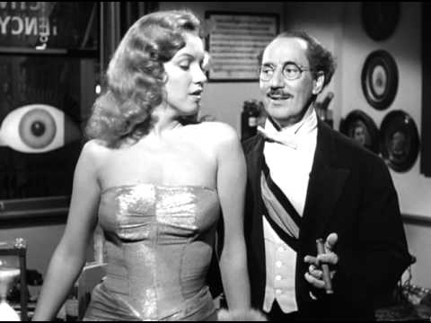

Mar 3 1950 "Love Happy" is Released Love Happy (1949) was the 14th (including Humor Risk), and virtually the last, Marx Brothers movie. The film stars Harpo Marx, Chico Marx, and, in a smaller role than usual, Groucho Marx, plus Ilona Massey, Vera-Ellen, Paul Valentine, Marion Hutton, Raymond Burr, Bruce Gordon (in his film debut), and Eric Blore, with a memorable walk-on by a young Marilyn Monroe. It was directed by David Miller, and written by Frank Tashlin and Mac Benoff, based on a story by Harpo.
